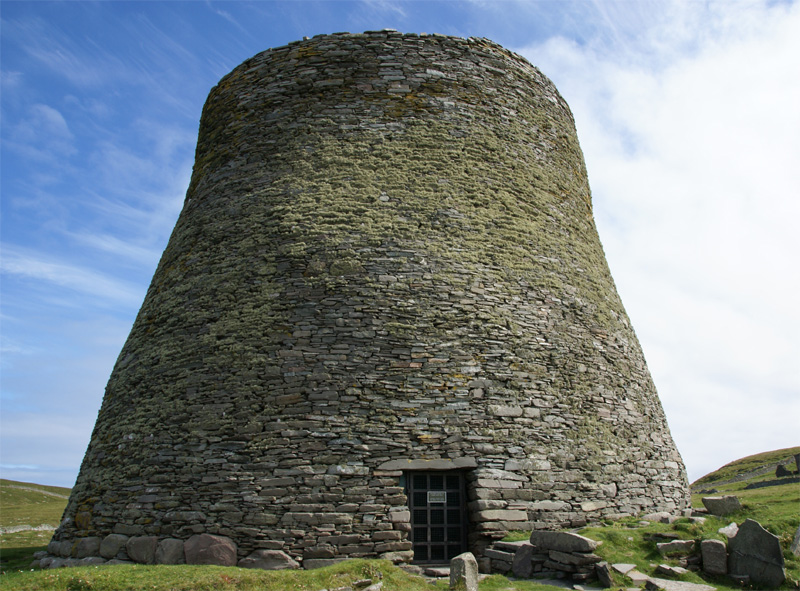

Islas Shetland
Las islas Shetland son un grupo de islas del Atlántico Norte situadas entre las islas Feroe, la costa del suroeste de Noruega y la isla de Gran Bretaña. Ligeramente por encima del 60°N de latitud, representan el extremo septentrional del mar del Norte. También es un concejo de Escocia.

Dominique: Las islas totalizan 1469 km², con una población de unos 22 000 habitantes, de los cuales unos 7000 viven en Lerwick, la capital. Corresponden al punto más septentrional del Reino Unido y el más cercano a Noruega y a las islas Feroe.
Fair Isle es una isla de Escocia, localizada aproximadamente a medio camino entre Shetland y las Orcadas. La isla mide 4,8 km de largo y 2,4 de ancho, ocupando una superficie total de 5,61 km². La isla, ocupada desde la Edad de Bronce, alberga una población de 70 habitantes.
EJarlshof Prehistoric and Norse Settlement cuya traducción del inglés-Jarlshof es el sitio arqueológico prehistórico más conocido en Shetland, Escocia. Se encuentra cerca del extremo sur del continente de Shetland y ha sido descrito como "uno de los sitios arqueológicos más notables excavados en las Islas Británicas". Contiene restos que datan de 2500 a. C. hasta el siglo XVII.
Mousa es una pequeña isla que forma parte del archipiélago de las Shetland. Está deshabitada desde el siglo XIX. Esta isla es conocida por el broch de Mousa, torre redonda de la Edad del Hierro, y está considerada una zona de especial protección por las colonias de cría de hidrobátidos.
Shetland Museum y Archives, traducción del inglés-El Museo y Archivos de New Shetland en Hay's Dock, Lerwick, Shetland, Escocia, fue inaugurado oficialmente el 31 de mayo de 2007 por SM la Reina Sonja de Noruega y el Duque y Duquesa de Rothesay.
El broch de MousaEl broch de Mousa es el ejemplo mejor conservado de un broch o torres de doble muro, localizado en las Shetland, Escocia. Es el más alto de los que aún se conservan en pie en el mundo y está entre los edificios prehistóricos mejor conservados de Europa. Se cree que se construyó alrededor del año 100 a.
